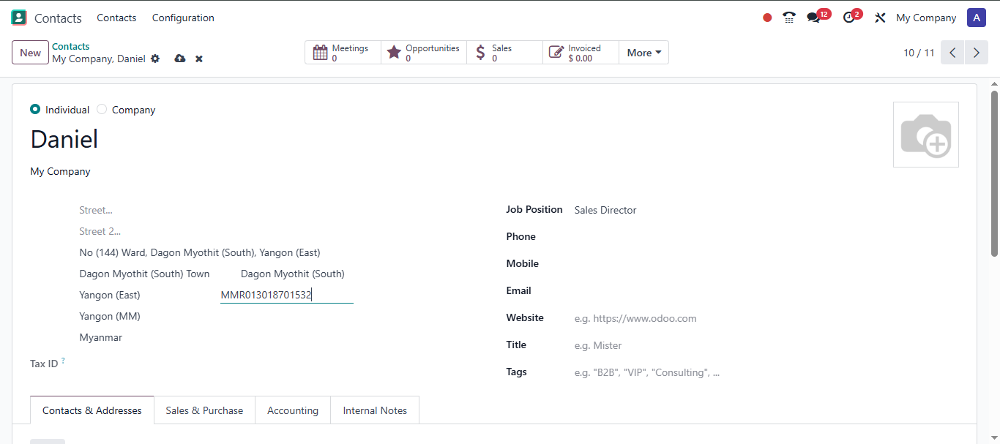
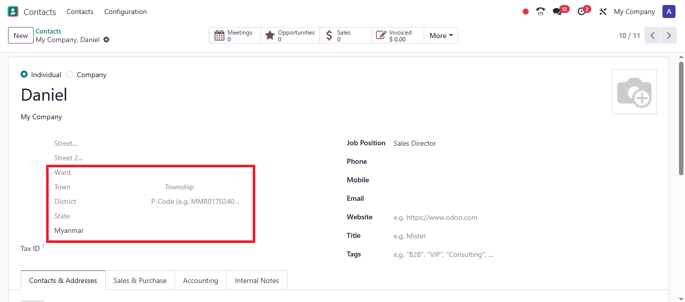
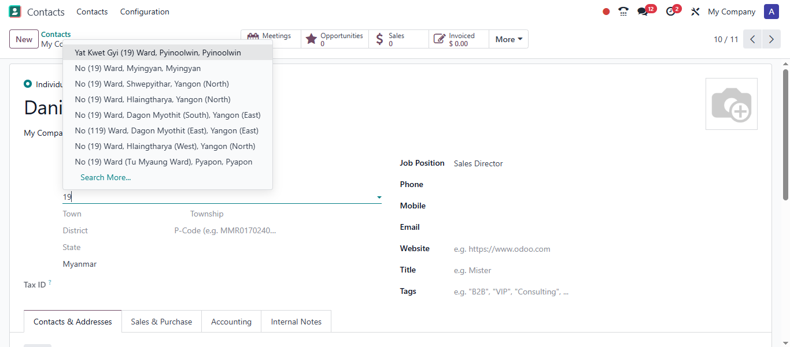
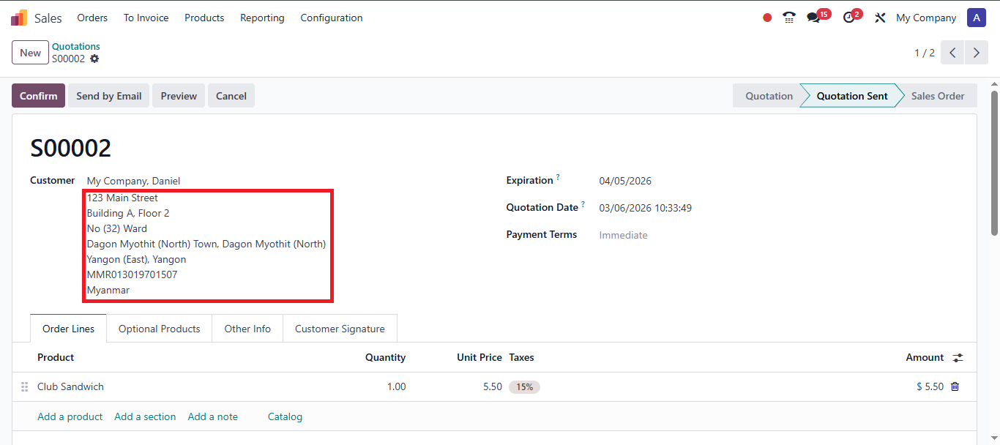
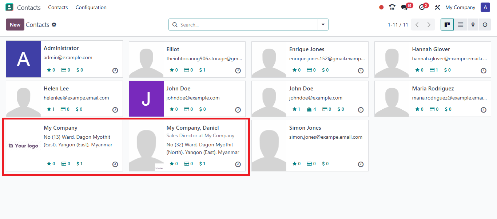
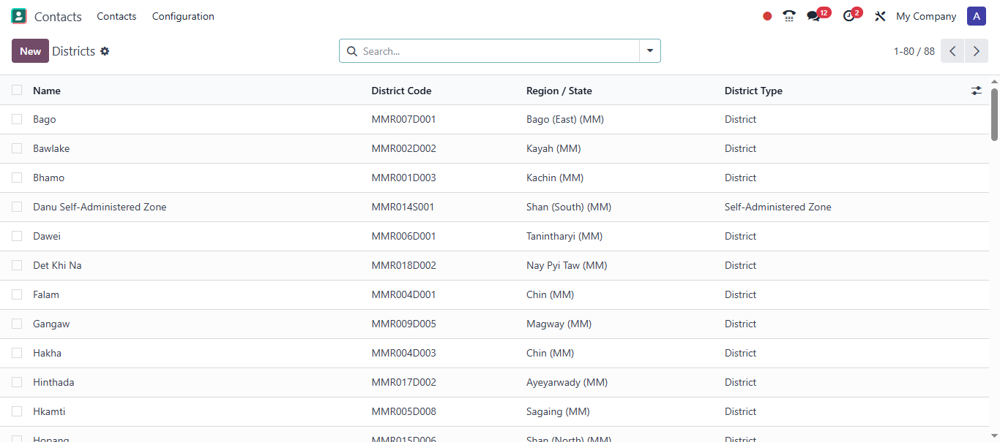
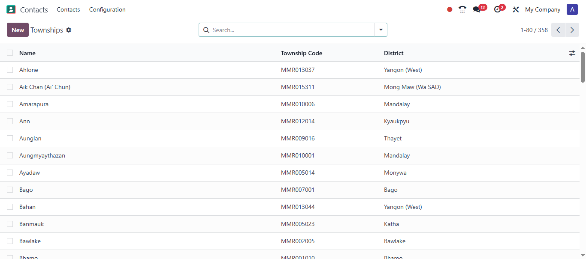
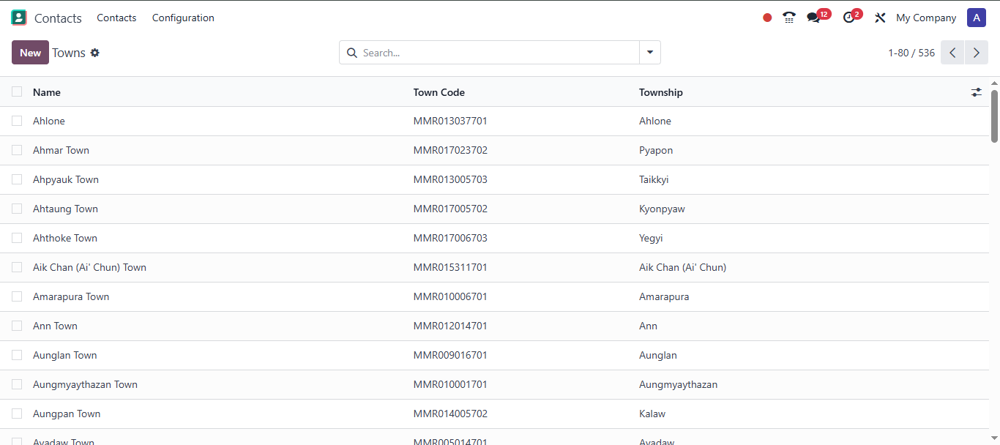
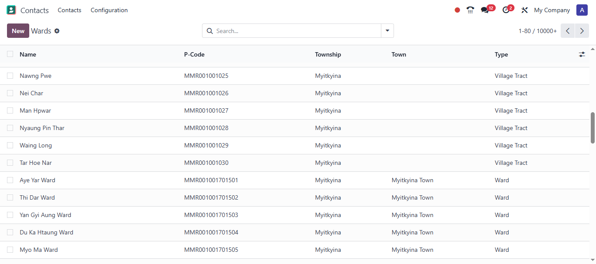
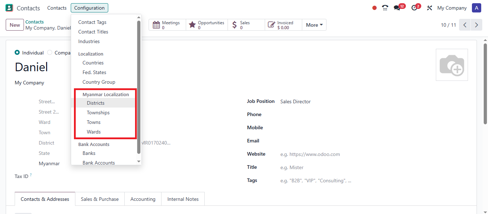

Complete administrative hierarchy with State/Region → District → Township → Town → Ward/Village Tract using official Myanmar Information Management Unit (MIMU) Place Codes.

Enter a MIMU P-code (e.g., MMR017024040) and watch all address fields populate automatically

Myanmar-specific fields appear automatically when Myanmar is selected as country

Search wards by name, P-code, township, or district with hierarchical display

Addresses print in Myanmar-standard format with all administrative levels

Myanmar addresses display correctly in kanban and list views

Districts

Townships

Towns

Wards / Village Tracts

Access via Contacts → Configuration → Myanmar Localization
| Level | Example | Description |
|---|---|---|
| Country | MMR | Myanmar ISO-3 |
| State | MMR017 | Ayeyarwady Region |
| District | MMR017D006 | Pyapon District |
| Township | MMR017024 | Bogale Township |
| Ward | MMR017024040 | Specific ward/village tract |
l10n_mm_pcode in your Odoo addons pathNo additional configuration required. Myanmar address fields appear automatically.
Myanmar Information Management Unit (MIMU)
Official Myanmar Place Codes (P-codes)
https://themimu.info/mm/place-codes
Zenonia
LGPL-3